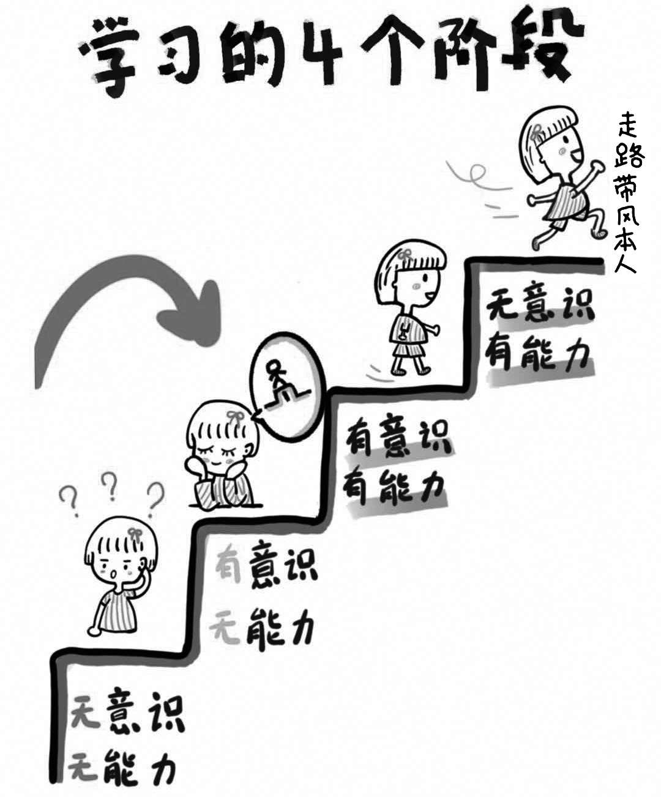
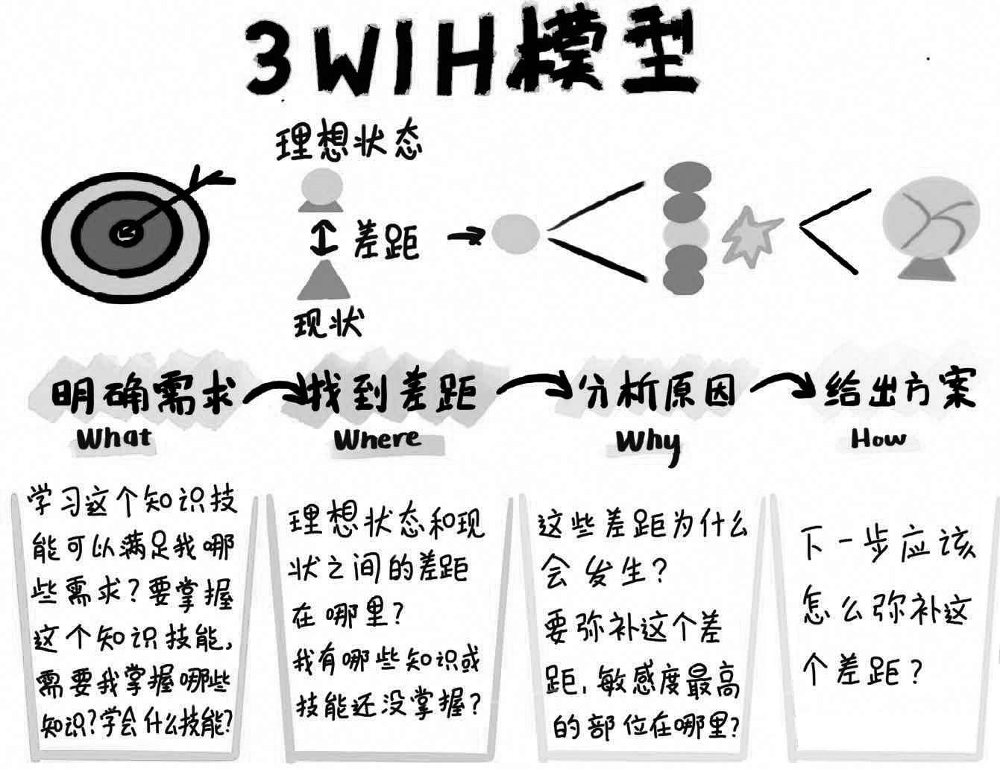

这是一个知识快速迭代，新领域、新技术层出不穷的时代，除了熟练掌握既有专业领域的知识以外，我们还需要接触一些全新领域的知识。比如，当下抖音火了，5G来了，短视频变成了最流行的营销手段，那么出于工作原因，我们便需要学习如何制作和分发短视频。再比如，近两年，不少省份将编程列入了高考范围，学习编程已成为一种主流趋势，很多家长也希望带领孩子学习编程……但是，大部分人面对新领域时往往会一脸茫然，不知如何快速入门。
事实上，在零基础的情况下，想要学习一门新知识或掌握一项新技能，往往需要经历一个从入门到熟悉的学习过程。我们在未入门时对新领域感到迷茫是一种非常正常的现象。
以学习开车为例，要掌握这个技能，从入门到熟练，我们至少要经历以下4个阶段：
第一个阶段：无意识无能力。在学习开车之前，作为一个零基础的“小白”，我们对于开车这个技能往往既没有概念，也没有能力。
第二个阶段：有意识无能力。每个人学车的第一步都是先学习一些与驾驶相关的理论知识，参加科目一考试。测试能确保我们掌握一些有关机动车的基本知识、道路安全法、交通信号等，从意识上对机动车驾驶涉及的整套系统建立一个总体认知。但是在这个阶段，我们的驾驶技能依然为零。
第三个阶段：有意识有能力。掌握相关理论知识后，我们开始学习开车，一步步熟悉驾驶步骤，包括如何加减挡、如何变更车道、如何倒车入库、如何侧方停车……在这个阶段，我们的驾驶技术并不熟练，总是有些磕磕绊绊，还会经常犯错误，每次操作都需要不断有意识地提醒自己将理论知识与开车的每个步骤联系起来。
第四个阶段：无意识有能力。经过一段时间的训练之后，我们能够熟练掌握驾驶的各种技能，在遇到突发情况时能够非常熟练地进行处理，单单依靠习惯而非思考便能进入安全驾驶的境界。

对于新领域只有模糊概念而没有基础认知，其实就是处在第一个“无意识无能力”的阶段，即我们通常所说的“零基础”。此时若想找到快速入门路径，我们需要从第一个阶段向第二个阶段跨越，即使在操作技能上还不够熟练，但至少可以从意识上对新领域建立一个总体认知。
当然，对新领域快速建立总体认知也需要注意技巧。如果只是局限于网络搜索或泛读一些书籍，往往会被海量信息裹挟导致一头雾水，结果也不尽如人意。想要获得对新领域的宏观感受和总体认知，我们可以向金融行业的投资人学习。
出于工作需要，这些投资人经常需要使用一套简单的分析方法，在短时间内快速了解一个全新领域，然后对眼前这家公司下一步的发展路径以及是否值得投资做出判断。这套分析方法叫作“3W1H”模型，主要包括投资人在评估一个公司时会重点询问的4个问题：
• What：这家公司做什么业务？主要满足哪些市场需求？
• Where：这家公司目前发展到了哪一步？
• Why：我为什么有必要投资这家公司？
• How：这家公司下一步的发展计划是什么？
我根据自己多年的学习经验和实践总结，将3W1H模型进行了适当改良。按照改良后的3W1H模型深入询问以上4个问题，大部分人都可以在零基础学习新领域的情况下尽快找到快速入门的路径。
What：明确需求。明确需求需要从不同的角度询问自己两个问题。第一个问题：学习这个知识技能可以满足我哪些需求？思考这个问题有助于确保我们带着明确的目的进入学习，而非盲目开始。第二个问题：要掌握这个知识技能，需要我掌握哪些知识，或者需要我学会什么技能？
Where：找到差距。理想状态和现状之间的差距在哪里？如果要达到学习目的，目前我还有哪些知识或技能尚未掌握？
Why：分析原因。这些差距为什么会发生？如果需要弥补差距，敏感度最高的部位在哪里？
How：给出方案。我下一步应该如何做？

莉娜是我在线下分享时认识的一位学员，她经常向我咨询一些问题。从业以后，她经历过一场在我看来跨度比较大的职业转型。莉娜在校时就读汉语言文学专业，毕业后在一家杂志社工作过两年。今年，她突然想要转行到法律领域，成为一名专职律师。考虑到法律行业对专业修养要求比较高，而她个人在法律专业能力上又是零基础，她为此查阅的资料也良莠不齐，甚至不乏观点相左的情况。于是，莉娜找到我并向我请教如何快速进入一个新领域。
我告诉她，进入一个新领域进行学习，我们不能基于想象一时冲动，也不能人云亦云，盲目跟风，而是应该按照3W1H模型深入思考——新的学习方向是否符合我的学习目的？如果要实现理想中的学习目标，我目前尚存在哪些差距？如果要弥补这些差距，切入新领域的关键点又在哪里？
我向她层层深入地追问了以下4个问题：
问题一：What。你希望通过学习法律，达到一个怎样的职业目标？若要成为一名律师，你需要具备哪些条件？
莉娜表示，她之所以想要转行进入法律行业，是因为她在儿时便渴望长大后为维护社会的公平正义而奋斗。但高中毕业后，她未能如愿以偿，进入法学院学习，直到工作后有了更多自主权，对法学的向往之情也重新燃烧起来。莉娜希望抓住机会，重新开始学习法律知识，以期尽快转型成为一名业务能力强大的专职律师。
而想要成为一名专职律师，她首先需要花费大量时间学习，并储备扎实的理论知识。此外，鉴于一部分律师事务所会对应聘者的学历及专业有所限制，所以莉娜最好能够重新进修并提升学历。最后，律师行业对从业资格要求比较严格，所以她需要尽快通过相关职业资格考试。除了这些条件，莉娜认为从事律师行业还需要拥有大量人脉储备以便未来开展业务。
问题二：Where。我接着向她提问：“你现在的个人素养和专职律师之间的差距在哪里？”
值得提醒的是：若想准确、全面地找到这个差距，我们必须对新领域的关键概念有一些初步了解。回到莉娜这里，她需要尽可能对法学教育的培养目标和对法律人才的评价标准拥有较为系统的认知，才能进行深层对比。
莉娜认真请教了一些专业人士，经过分析，她发现差距主要存在于她的专业知识和思维方式两个方面。专业知识属于基础条件，经过一段时间的系统学习比较容易弥补；而思维方式上的差异相对难以弥补：法律人思考问题偏向理智、冷静、客观，相较之下，莉娜考虑问题更偏向感性并且容易被情感牵制。同时，在独立思考的能力上，她认为自己也有所欠缺，很容易被舆论轻易影响。
比如，每当发生一些严重的刑事案件时，网络上的声音很容易让人陷入集体的情绪化思考，其中甚至不乏一些“请求判处死刑”的集体声讨。莉娜个人也很容易被这些义愤填膺的评论所影响，而具备专业素养的法律人士则会客观地分析事件起因，从行事动机、影响后果、法律、道德与伦理的关系等多方面来定性事件。
问题三：Why。这些差距为什么会发生？要弥补这些差距，敏感度最高的部位在哪里？
莉娜告诉我：因为她之前所就读的专业和从事的工作均偏向文字方向，身边的同学、朋友以及同事也大多和她一样感情细腻、情绪丰富，因此无论是自己的思考方式还是身边环境，都比较缺乏理性声音。要解决这个问题，莉娜认为自己有两种方式可以选择：其一，适当减少一些感性因素的接触；其二，主动训练自己的理性思考能力。
但是，哪一种方式才是下一步改变的关键呢？她需要考虑哪种方式对于改善自己的思维方式更敏感。最开始，莉娜认为下一步的关键应该是减少阅读文艺类书籍，同感性因素适当“隔绝”。但是经过一段时间后她发现，这种方式治标不治本，毕竟要成为一名职业律师，她以后需要接触各类事物，也需要和各类人群打交道，所以不可能永远排斥感性人群和感性观点的存在；但若是缺乏独立思考能力，遇到问题时，她就依然会被外界轻易影响。她明白，只有拥有强大的理性思考能力，才能时刻保持客观理智。
既然如此，那么弥补差距的最高敏感部位应该是：尽快培养起自己的理性思考能力。找到敏感部位，莉娜才能清楚从哪个环节开始改变最有效率。
问题四：How。寻找真正的解决方案，从敏感部位入手弥补差距。
为培养理性思考能力，莉娜选择了以下两条路径：一是在补充专业知识的同时，大量阅读相关法学专著，以便了解法学家思考问题的方式。除此之外，更多不同的观点也能帮助自己训练多元思维，让自己习惯使用多种角度思考问题。二是主动结识一些法律专业的朋友，与他们交流对同一件事的看法，深度参与一些专业的法律论坛，以此扩充行业人脉。
事实证明，这些方式也确实大有帮助。我再见到莉娜的时候，她已经在一家不错的律师事务所就职，业务也越来越精通。
从牙牙学语到毕业进入社会，我们每个人都经历了无数次选择，小到看什么书、参加哪个兴趣班，大到填写高考志愿、选择进修专业，在我们对社会运作懵懂无知，甚至对自己也一知半解（不清楚自己喜欢什么、擅长什么、适合什么）的时候，便稀里糊涂地做出了许多或对或错的选择。
好在进入社会后，我们还有机会可以跨领域学习，接触新的知识，从事新的职业，在自己真正感兴趣的领域上做出一番事业。3W1H模型的价值正在于此——它可以让我们快速进入一个新领域，缩短从普通人成为专家所需要的“一万个小时”。